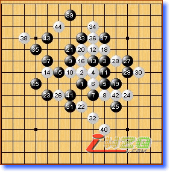

吴镝拿下冈部宽
#1 吴镝拿下冈部宽 作者：有志青年 发表时间：2007-8-13 1:38:23
原文地址：http://www.rifchina.com/Article/ShowArticle.asp?ArticleID=4365
李洪斌点评：
吴镝的23有新意，但这个定式非常常见，各国棋手研究的也比较深入，执黑要想赢很难。目前就看35这步棋冈部如何对应了。如果，黑棋35后没觅到胜机及时转身，应该能守和吧。
白36如果脱先在下面强攻，黑上面有胜。冈部防的很老实
但，黑棋必须要先手处理好左上，然后必须方下边的白棋。目前这个39白棋还是不能在下面动手。估计冈部只能继续忍耐。

如图所示：如果白棋40在下面强攻，黑45白棋估计难防
李洪斌点评：
棋局进展的确如我们的预料，41为左边的做棋做准备吧。白40之前应该先把41位的四走掉， 43似乎可以考虑8d 。实战的43如果白防44－5g的话，就看吴镝下面的防守了。
李洪斌点评：
48最强防49位 黑棋双杀 ！我希望山口这盘输了，那么下轮吴镝赢山口，吴镝就可以有夺冠希望了。祝贺吴镝！
bayerno（顾闻一）：赞美蓝鲸！ 蓝鲸太有才了～～～～～～～～～～～～～～～ ！